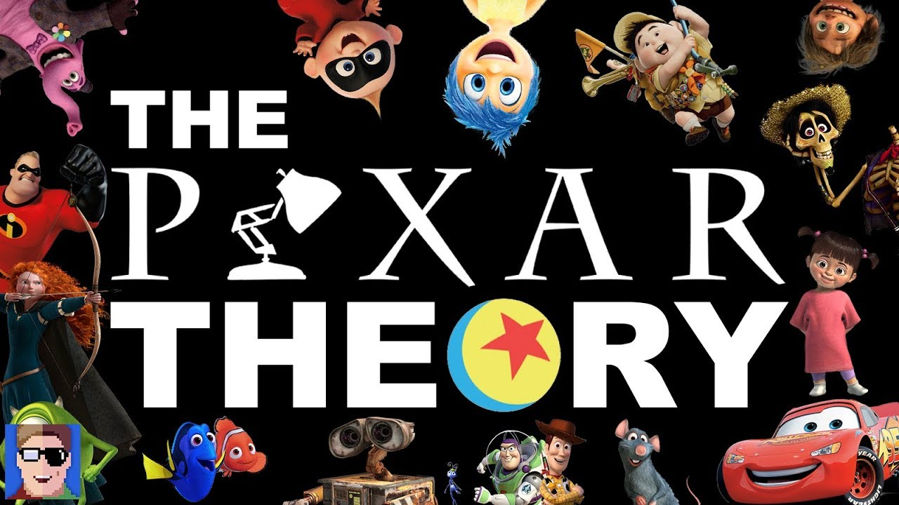

Executivo da Disney comenta sobre a famosa "Teoria da Pixar"
Ideia popular entre fãs sugere que todos os filmes do estúdio fazem parte do mesmo universo
Publicado hoje • Cinema / Animação

Um executivo da Disney comentou recentemente sobre uma das teorias mais populares entre fãs de animação: a chamada “Teoria da Pixar”. A hipótese sugere que praticamente todos os filmes do estúdio estariam conectados dentro de um único universo compartilhado.
A teoria surgiu anos atrás em comunidades online e rapidamente ganhou popularidade entre fãs que começaram a encontrar possíveis conexões entre diferentes produções do estúdio.
Entre os exemplos mais citados estão objetos, personagens ou elementos visuais que aparecem em múltiplos filmes de maneira aparentemente proposital.
Durante uma entrevista, o executivo comentou que muitos desses detalhes realmente são colocados de forma intencional como pequenas homenagens ou easter eggs.
No entanto, ele explicou que isso não significa necessariamente que todos os filmes façam parte de uma única narrativa oficial.
Segundo ele, os animadores da Pixar gostam de incluir referências internas como forma de diversão e também como um presente para os fãs mais atentos.
Mesmo sem confirmação oficial da teoria, muitos admiradores continuam analisando cuidadosamente cada novo lançamento em busca de pistas que possam conectar as histórias.
Independentemente de a teoria ser verdadeira ou não, ela demonstra o nível de envolvimento do público com as produções da Pixar e a riqueza de detalhes presente em seus filmes.